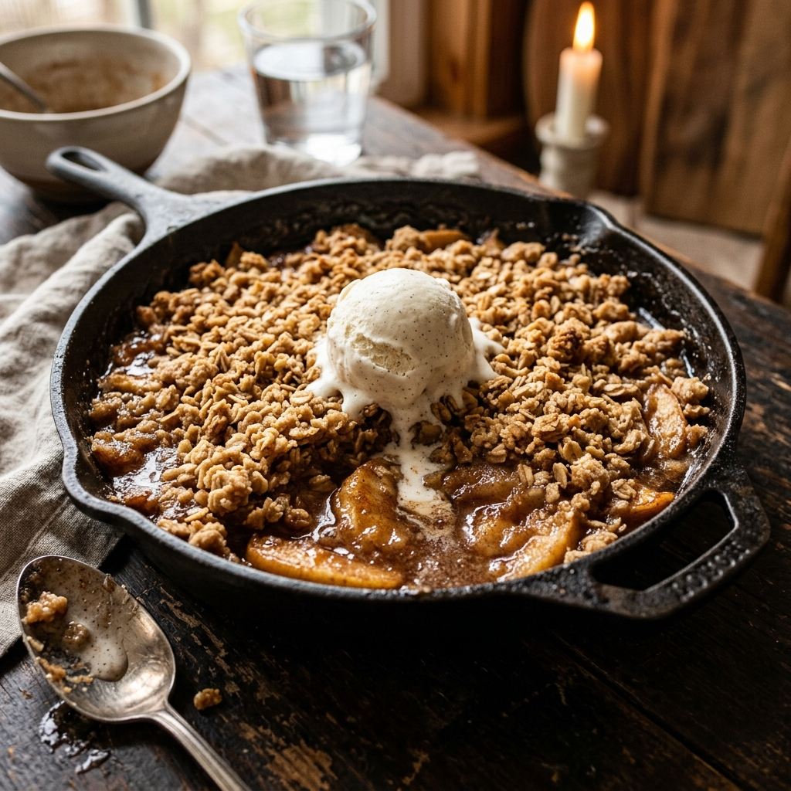

Description
A warm and comforting dessert with tart apples and a crunchy, buttery oat topping. Best served with vanilla ice cream.
Ingredients
- 6 large Granny Smith apples, peeled and sliced
- 1/2 cup White sugar
- 1 tbsp Ground cinnamon
- 1 cup Rolled oats
- 1 cup All-purpose flour
- 1 cup Brown sugar
- 1/2 cup Butter, chilled and cubed
Instructions
- Preheat oven to 190°C (375°F).
- Toss sliced apples with white sugar and half of the cinnamon. Place in a baking dish.
- In a separate bowl, mix oats, flour, brown sugar, and remaining cinnamon.
- Cut in the chilled butter using a fork or pastry blender until the mixture is crumbly.
- Spread the oat mixture evenly over the apples.
- Bake for 35-40 minutes until the topping is golden brown and the apples are bubbling.
- Serve warm, ideally with a scoop of vanilla ice cream.